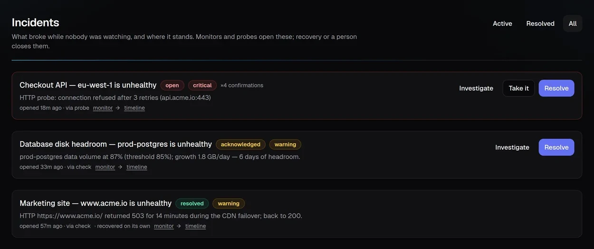
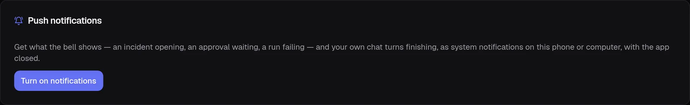
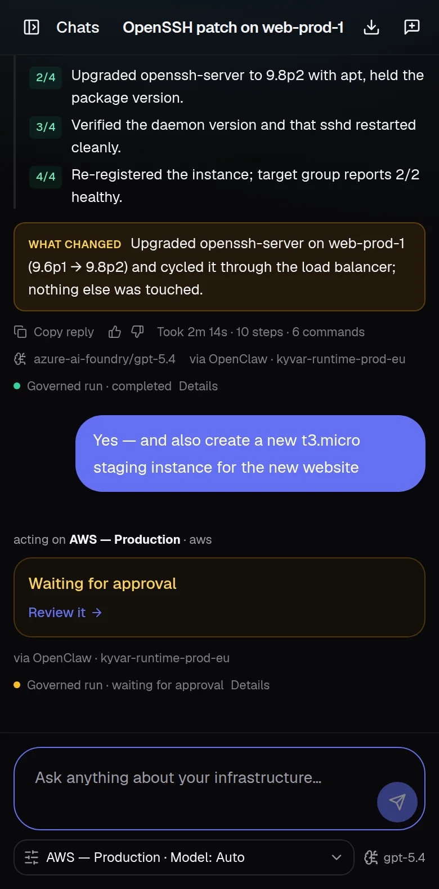

Let AI operate infrastructure.
Keep humans in control.
KYVAR is the governance plane for autonomous IT operations: one controlled path from human intent to approved execution, validation, audit and self-healing — across cloud and on-prem.
Seven gates between intent and change.
Every meaningful action travels the same governed pipeline. Nothing skips a step, and every step leaves evidence.
Governance you can see.
The KYVAR console makes every decision visible — what was asked, what policy said, who approved, what ran, and what proved the fix.


From idea to infrastructure.
Ask for the outcome in plain language. KYVAR plans the change, classifies the risk, parks it on a human approval when policy says so — and what lands is exactly what was approved, with the evidence to prove it.
Detect. Heal. Prove it.
Automatic monitoring, incidents and self-healing run as one governed loop. Down at 03:14, an incident opened, diagnosed, remediated by the runbook you already wrote and re-verified — with a human woken only when policy wants one, and the whole story on one timeline.


What is broken right now, who has it, and how it ended. One open incident per monitor — a check failing every minute is one problem getting older, not sixty — resolved as “recovered” when the next check passes, or by the person who fixed it. Different facts, said differently.
An unhealthy verdict can launch a named runbook or a multi-step workflow instead of an improvised fix — behind the same arming, threshold and cooldown. A procedure that was turned off or deleted suppresses with a reason; it never quietly improvises instead.
Dispatched or suppressed, and why — the gate that held it, the cooldown still running, the procedure that no longer exists. The heal’s outcome lands on the incident’s timeline, and recovery is only ever claimed by the next check, never by a fix that says it worked.
The gate follows you.
An approval parks, a monitor fires, and the person who has to decide is not at a desk. KYVAR installs to the home screen and reaches the phone with push notifications — alarms for the team, finished tasks for the person who asked — without opening anything inbound.
And the decision happens where the team already is. Approve or deny from Slack: the request arrives as a card and the buttons decide it. Slack’s signature is verified against the raw request body before anything is parsed, and a Slack user id is not an identity — the press resolves to a KYVAR account an administrator mapped, so separation of duties, the approver group and the audit actor all apply exactly as they do in the console. It is a different door onto the same gate, never a second gate.


A ticket arrives. A root cause comes back.
An issue raised in Jira Service Management or ServiceNow becomes an incident here and is investigated before anyone has read it — against a brief the control plane composes from the assets the report names, the monitors watching them, what changed in the last day, what Datadog, Splunk and Prometheus see right now, and what fixed this before. The agent gets a starting point, not a blank page.
Root cause, confidence, the evidence behind it and a proposed fix — four named fields, so a diagnosis with nothing to show for itself reads as exactly that. Investigating changes nothing: it is dispatched read-only and never parks on the approval queue, because the word “delete” in a ticket must not stop a diagnosis.
The proposed fix runs as the clicking person’s own turn — policy, approval, separation of duties and their own cloud permissions all apply, with no waiver. What a second human approves is a diagnosis they can read. “None needed” and “needs a person” are not fixes to apply, and KYVAR says so instead of trying.
Opened, diagnosed, remediation requested, waiting for approval, finished — each posted to the issue as a work note, and resolving the incident transitions the ticket. Close it in Jira or ServiceNow and the incident closes here. Never echoed back: whichever side closed it, the other is not told to close it again.
A probe seeing the checkout API down, the monitor on the machine behind it, and the service desk’s ticket for the same outage are one problem — joined on the asset, within a window you set. One investigation, one set of notifications, and the first ticket becomes the ticket.
A resolved incident with a root cause becomes a draft article. A person reads it before anything else does — an article the next investigation is handed is an instruction in all but name — and once published it can go outward to Confluence or a ServiceNow knowledge base, where your service desk already looks.
KYVAR wrote reviewed articles into your ServiceNow knowledge base and Confluence space for weeks — and never read one. So an organisation with fifteen years of runbooks got an investigation that started from nothing, while KYVAR was writing into the very shelf it was ignoring. The brief now searches those bases too, cited, never copied: article titles and links, no bodies, because a knowledge base is exactly where somebody pastes a password “temporarily”. And it is framed as unreviewed and placed below KYVAR’s own articles, because nobody vetted your wiki for this purpose.
The same cause twice is a recurring problem, not two tickets: how often, on which machines, through which sources, what was done about it, and the hours it has cost. Computed from the record, with no model deciding what counts as the same problem.
VMware, Nutanix, Proxmox, Hyper-V.
Most estates are not only cloud. KYVAR discovers clusters, hosts, datastores and virtual machines from all four — from a runtime inside your network, because that is the only place an on-prem hypervisor answers, and because SCVMM has no REST API at all, so Hyper-V is reached over PowerShell remoting rather than pretended at.
Forty-seven governed actions across them: power, snapshots, live migration, CPU and memory resize, disk growth, clone, host maintenance mode and deletion. Graceful and forced are separate verbs, never a flag — an approver reading “stop the database VM” is told which one they are authorising — and the values are in the sentence, so it says “sets the virtual machine to 8 vCPU and 16384 MB” rather than “Resize web-01”.
Ask a server how it is. Act on a laptop.
The ticket is usually about a machine, and until you can reach it the investigation is guesswork. There are two populations and they are not reachable the same way — so KYVAR does not pretend one design serves both.
Twelve read-only checks from a fixed vocabulary — failed services, a named service, top processes, load and memory, disk, listening ports, reachability, which resolver answered, which gateway the packet would take and where the path stops, recent errors, pending patches, and what changed on the machine lately. No model composes a command against your production server. The checks are typed, a parameter that could be shell is refused by whitelist rather than escaped, host keys are pinned and a host with no confirmed fingerprint is refused before anything connects. One connection carries every check, and what it found is cited in the next investigation.
A machine behind NAT and asleep in somebody’s bag answers nothing — so it is reached through Intune: sync, Defender signatures and scan, screen lock, restart, shut down, retire and erase. The four that interrupt somebody or cannot be undone are held for a second person, and the erase states in words which of the two erases was chosen, because “Erase the device” tells an approver the verb and not the change.
Four directories. One person.
A ticket names a human being before it names a server, and most estates keep their people in more than one place. KYVAR reads all four — Microsoft Entra ID, Okta, on-premises Active Directory over LDAP, and Google Workspace — and one person present in three of them is one asset here, joined on the address they sign in with.
Okta has eight account states and exactly one of them means “signed out on purpose”; Active Directory answers locked out, password expired and must change at next logon; Google reports suspended and archived as separate facts. Collapsing any of them into a tidy enabled/disabled destroys the three states a “cannot sign in” ticket is actually about, so KYVAR keeps the source’s own vocabulary and says which source said it.
The scan says who exists; an on-demand read says what happened when they tried. Okta’s System Log for this account’s sign-in attempts, with the vendor’s own reason on each — and four of Okta’s twelve outcome values are perfectly ordinary, including an MFA challenge, so a naive “not SUCCESS is a failure” rule would report every properly protected account in the org as failing. Plus which applications they can actually reach, which is the other half of “I cannot get into Salesforce”.
The desktop is the workplace.
For a large part of the workforce the estate that matters is a virtual desktop, and “it is slow today” is the hardest ticket in IT. KYVAR reads all three platforms — Azure Virtual Desktop, Citrix DaaS and Omnissa Horizon — into one vocabulary, so “show me every disconnected session” is a question with one answer.
AVD’s drain mode, Citrix’s maintenance mode, and a Citrix VDA with a reboot scheduled: in every case the machine is powered on, registered, and accepting no one — and every other field reports it healthy. KYVAR says DRAINING, IN MAINTENANCE and names the scheduled reboot, because a collector that reports only the status word says “Available” about a desktop nobody can reach.
Citrix answers with the total and the broker’s share of it. Horizon answers with the logon broken into segments and the live protocol measurement — latency, bandwidth, packet loss, frame rate — for the session somebody is sitting in right now. Measured live, and the page says so, because every other endpoint reading in this product is a cache and states its age.
Log a session off or disconnect it, reset or restart a desktop, put a VDA into maintenance. On Citrix the two are named the opposite way round from intuition — disconnect keeps the seat, logoff frees it — and since a “full” delivery group is usually full of disconnected sessions, the effect sentence an approver reads says which one they are authorising.
“It is blocked” should not be a deduction from silence.
A server can say which resolver answered, which gateway it would use and where the path stops. No host can see the rule that would stop it. With a Palo Alto PAN-OS connector, KYVAR asks the firewall itself.
A simulated policy match against the live rulebase — the deciding rule, its index, and the vendor’s own action word, because deny, drop and reset all mean the traffic does not get through and are not the same event. Nothing is committed; the policy is evaluated.
When a flow matches no configured rule, PAN-OS applies one of two implicit rules that disagree — intrazone allows, interzone denies. So “no rules matched” tells an operator nothing and “denied” is flatly untrue for traffic staying inside one zone. KYVAR answers three ways, and says plainly when it cannot tell which applies.
Expiry dates on the firewall’s own certificates — the requirement’s worked example for a VPN that stopped working — and a hit count per security rule, so a rule that has matched nothing since it was written is visible as the audit finding it is. A private key on the firewall stays on the firewall; a test proves it cannot reach the inventory.
Every source. One asset.
KYVAR discovers what lives behind every connector and links the rows that are the same real machine — matched on hard evidence, never a guess dressed as a fact. A security finding from one tool lands on the asset another cloud runs, and the fix flows through the connector that owns it.

The numbers behind the platform.
Cloud (AWS, Azure, Oracle Cloud), virtualization (vSphere, Nutanix, Proxmox, Hyper-V), endpoints (Linux, macOS and Windows servers), identity and devices (Entra ID + Intune), service desk (Jira, ServiceNow), observability (Datadog, Splunk), knowledge (Confluence) and delivery (Kubernetes, GitHub, with Terraform on top). The governed pipeline is the product, not the list: a new connector brings its own credentials and discovery, and inherits RBAC, approvals, credential delivery and audit unchanged.
An on-prem runtime opens nothing. It dials out to the control plane, is enrolled by single-use invitation, and is the only place your credentials are ever decrypted.
The backend suite runs twice per change — SQLite and PostgreSQL — plus a browser sweep of every page on a live stack. Gates, tenancy, credentials, abuse cases and the UI’s own regressions are tested like the product they protect.
Autonomy with a safety envelope.
Every meaningful action travels through a control plane built to say “not yet” when it should. And your own cloud permissions decide what you can do — on AWS, literally: the grant you were given selects the role your run receives, so an admin can do everything and the person who owns the websites is stopped by AWS, not by a filter in front of the model.
Not a chatbot over your cloud.
Chat assistants suggest commands. KYVAR executes them — inside a policy engine, an approval gate and a full audit trail. The autonomy is the product; the governance is the architecture.
A ticket, the estate it names, the diagnosis, the fix, the proof and the article that stops it happening again share one control plane and one evidence trail — not five tools stitched by webhooks. Discovery, monitoring, incidents, self-healing, provisioning and multi-step workflows are the same pipeline seen from different sides.
Execution happens on runtimes inside your network, with credentials that never leave it. Cloud, on-prem, air-gapped-friendly by design.
Where your work actually lives.
KYVAR operates across cloud, on-prem, end-user and service-desk systems through governed runtimes that return evidence, not just status. The control plane decides what may happen; runtimes execute close to the target — and each new system we connect plugs into that same decision, without a second set of rules.
Twenty-six connectors today, and a connector stays read-only until a governed runner exists for it, because the product must not offer a button it can only refuse. Where one does exist there are 82 action verbs across seven platforms behind the same gate chain — each stating in plain words what it will change before anybody approves it.
Autonomous IT, defined.
What is autonomous IT?
Autonomous IT means AI agents operating your infrastructure — provisioning, monitoring, diagnosing and fixing — instead of only alerting a human to do it. KYVAR's position: autonomy is only usable in production when it is governed, with RBAC, risk policy, human approval gates and a full audit trail around every action.
What is self-healing infrastructure?
Self-healing infrastructure detects a failure, diagnoses the cause, applies a bounded remediation and then re-verifies real health — closing the loop without waiting for a human. In KYVAR, every heal runs behind thresholds, cooldowns and approvals, and leaves evidence that the fix worked.
What are Day 0 and Day 2 operations?
Day 0 is building: turning intent into provisioned infrastructure. Day 2 is everything after go-live: monitoring, incident response, patching and recovery. Most tools cover one; KYVAR runs both through the same governed pipeline, so the way you build is also the way you operate.
How is KYVAR's automatic monitoring different from a monitoring tool?
Classic monitoring ends at an alert. KYVAR's monitors are allowed to act: an unhealthy verdict opens an incident somebody can take, and — armed per monitor, off by default — can launch a bounded fix, a named runbook or a whole workflow, behind the same thresholds, cooldowns, approvals and audit as any human-requested change.
One real workload. 30–60 days.
Evidence you can trust.
A focused pilot gives operations, security and leadership measurable automation, explicit control, and a complete action trail.